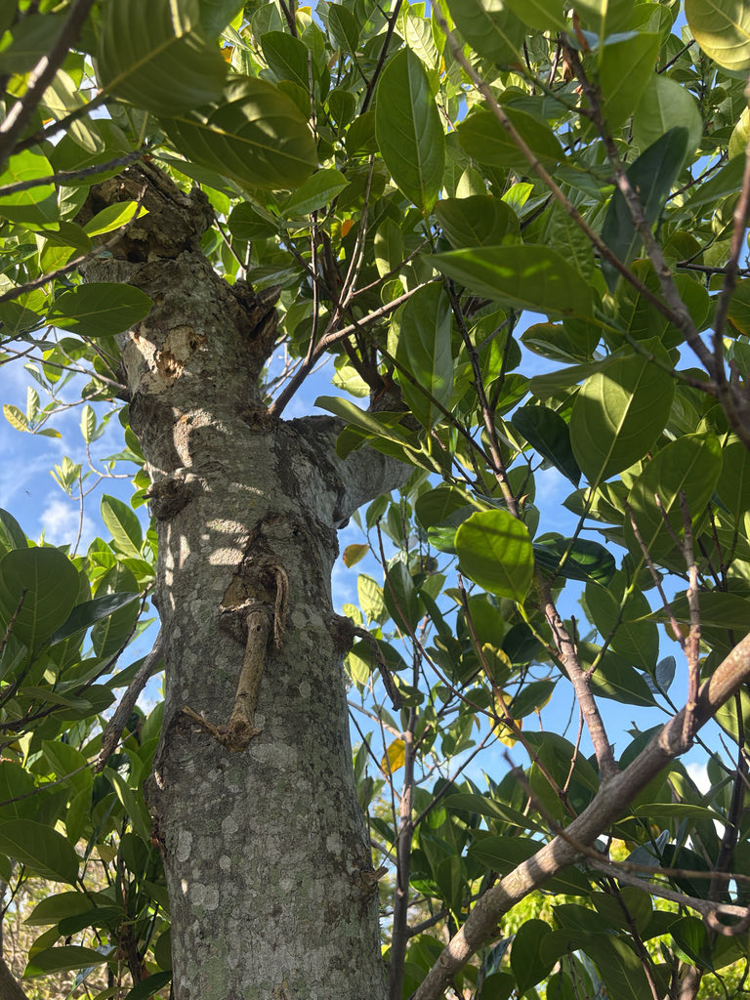

- Jackfruit produces the largest fruit of any tree on Earth — a single one can weigh over 100 pounds.
- The giant fruits grow straight from the trunk and main branches, not out on the twigs — a trick called cauliflory that lets the wood bear the weight.
- Ripe jackfruit floods the air with isoamyl acetate, the same fruity compound that gives Juicy Fruit gum its signature smell — a coincidence so uncanny that fans have debated the connection for decades.
- An enormous jackfruit is not really one fruit at all. It is a fused cluster of hundreds of individual flowers, each pollinated flower swelling its perianth into one of those sweet golden bulbs you eat.
Native to the rainforests of the Western Ghats of India and surrounding South and Southeast Asia. Cultivated across the tropics for thousands of years and grown in frost-free South and Central Florida.
- The jackfruit is a record-holder: the largest tree-borne fruit in the world, with individual fruits regularly topping fifty pounds and sometimes exceeding a hundred. To carry that weight, the tree does something unusual — it produces fruit directly on the trunk and major limbs (a habit called cauliflory) rather than on slender outer branches.
- Inside the knobby green rind are dozens of sweet, golden, edible bulbs surrounding large seeds, all embedded in stringy fibers. Ripe jackfruit is fragrant and sweet; young, unripe jackfruit is starchy and neutral, and when cooked it pulls apart into tender shreds that have made it a popular plant-based stand-in for pulled meat.
- What looks like a single fruit is botanically a syncarp — a multiple fruit formed from an entire inflorescence of tightly packed flowers. Each sweet, golden bulb is the swollen perianth of one successfully pollinated female flower; the stringy rag surrounding them represents flowers that did not develop. A single jackfruit can contain the fused remains of thousands of individual blooms.
- Pollination here is a three-way mutualism. A tiny gall midge, Clinodiplosis ultracrepidata, is attracted to both male and female flower spikes by similar scent compounds. On the male spikes, a parasitic fungus (Rhizopus artocarpi) takes hold, and the midges feed on it and lay their eggs there.
- Female spikes offer no fungus and no reward — they simply mimic the male scent closely enough to lure the pollen-dusted midges in anyway. The whole elaborate system was only formally described in 2018.
- Every part of the tree exudes a sticky white latex, so harvesting and cutting jackfruit is traditionally done with oiled hands and knives to keep the glue at bay.
Fallen and overripe fruit is a magnet for insects, birds, and mammals. The large evergreen canopy provides dense shade, cover, and nesting habitat.
A large evergreen tree with a dense, rounded crown.
Tiny, in dense fleshy spikes borne on the trunk and branches; male and female spikes on the same tree. A gall midge (Clinodiplosis ultracrepidata) pollinates both, lured by matching scents — though only male spikes offer a fungal food reward.
Enormous, oblong, green to yellow-brown, knobby-skinned syncarp growing from the trunk and limbs. It is not a single fruit but hundreds of individual flowers fused together — each sweet golden bulb is the swollen perianth of one pollinated flower.
Large, glossy, leathery, dark green, oval.
Huge knobby fruit attached directly to the trunk and big branches — a sight no other park tree offers. Look closer for the smaller, club-like male and female flower spikes growing side by side on the same limbs. Glossy dark leaves and milky sap confirm it.
Ripe bulbs are eaten fresh; unripe fruit is cooked as a vegetable and meat substitute; the seeds are eaten boiled or roasted.
No known toxicity to people. The sticky white latex from cut fruit or stems is messy and can irritate skin, but it isn't poisonous.
Not listed as toxic to dogs by ASPCA. The flesh is harmless in small amounts, but the large seeds are a choking hazard and the latex can upset a dog's stomach.


- © Randall Carter (CC-BY-NC), via iNaturalist